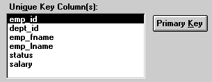

The Unique Key Columns box in the Specify Update Properties dialog box specifies which columns PowerBuilder uses to identify a row being updated. PowerBuilder uses the column or columns you specify here as the key columns when generating the WHERE clause to update the database (as described below):

The key columns you select here must uniquely identify a row in the table. They can be the table's primary key, though they don't have to be.
 Using the primary key Clicking the Primary Key button cancels any changes in the
Unique Key Columns box and highlights the primary key for the updatable
table.
Using the primary key Clicking the Primary Key button cancels any changes in the
Unique Key Columns box and highlights the primary key for the updatable
table.